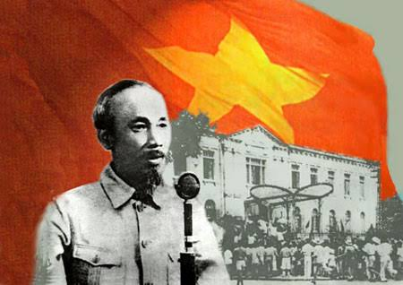
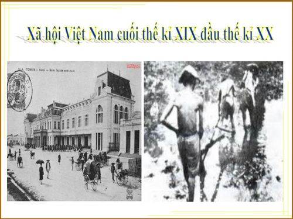
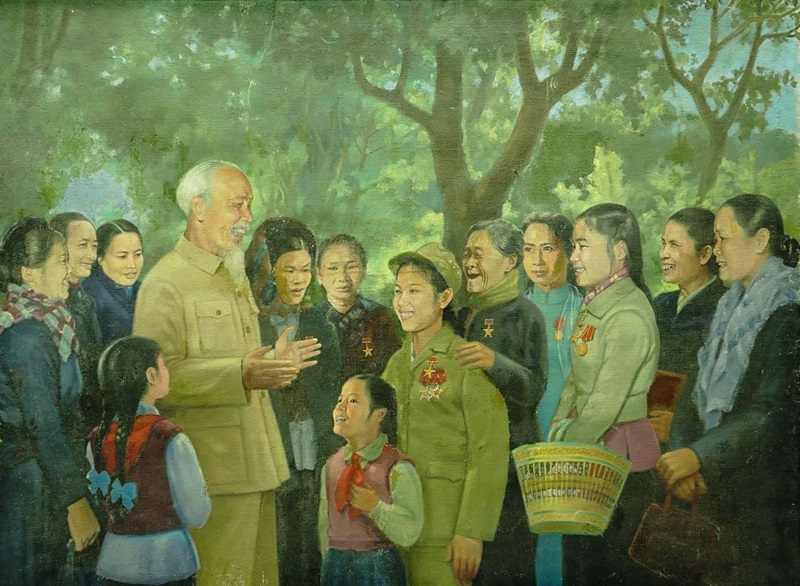

CHƯƠNG 2
Cơ sở, quá trình hình thành và phát triển
Tư tưởng Hồ Chí Minh
Vấn đề nghiên cứu trọng tâm:
Góc nhìn biện chứng: “Thời thế tạo anh hùng, hay anh hùng tạo thời thế, điều nào sẽ đúng với cuộc đời và sự nghiệp của Chủ tịch Hồ Chí Minh?”
Khái quát 3 trụ cột cơ sở hình thành (Mục 2.1):
- Cơ sở thực tiễn (Mảnh đất hiện thực): Biến động lịch sử của xã hội Việt Nam thuộc địa nửa phong kiến và bước chuyển biến của thời đại trên thế giới cuối thế kỷ XIX – đầu thế kỷ XX.
- Cơ sở lý luận (Vũ khí tư tưởng): Truyền thống yêu nước quý báu của dân tộc Việt Nam, tinh hoa văn hóa nhân loại (phương Đông & phương Tây), và tiền đề lý luận quyết định về chất: Chủ nghĩa Mác – Lênin.
- Nhân tố chủ quan (Chủ thể chuyển hóa): Phẩm chất cá nhân phi thường, tư duy độc lập tự chủ và năng lực hoạt động thực tiễn lỗi lạc của Người.
Khung nhìn biện chứng mở đầu:
- Thời thế tạo ra hoàn cảnh và yêu cầu lịch sử.
- Con người chủ động nhận thức, nắm bắt và tác động trở lại hoàn cảnh.
- → Hai yếu tố tác động qua lại, cùng góp phần hình thành và phát triển tư tưởng Hồ Chí Minh.

01 CƠ SỞ HÌNH THÀNH
Bối cảnh lịch sử – “Thời thế đặt đề bài lịch sử
Việt Nam
- Cuối thế kỷ XIX – đầu thế kỷ XX, Việt Nam trở thành xã hội thuộc địa nửa phong kiến.
- Các phong trào cứu nước theo khuynh hướng phong kiến và dân chủ tư sản lần lượt thất bại.
- → Đất nước rơi vào khủng hoảng về đường lối cứu nước và lực lượng lãnh đạo.
Thế giới
- Chủ nghĩa đế quốc và hệ thống thuộc địa phát triển, mâu thuẫn dân tộc ngày càng gay gắt.
- Cách mạng Tháng Mười Nga (1917) và Quốc tế Cộng sản (1919) mở ra những điều kiện mới cho phong trào giải phóng dân tộc.

Cơ sở lý luận – Những giá trị Hồ Chí Minh tiếp thu
Truyền thống dân tộc
- Chủ nghĩa yêu nước.
- Tinh thần đoàn kết, tương thân tương ái.
- Ý chí độc lập, tự chủ và bất khuất.
Tinh hoa văn hóa nhân loại
- Phương Đông: Nho giáo, Phật giáo, Lão giáo, tư tưởng Tam Dân...
- Phương Tây: Tư tưởng tự do, bình đẳng, quyền con người, dân chủ và pháp quyền.
- → Tiếp thu có chọn lọc, kết hợp với thực tiễn Việt Nam.
Chủ nghĩa Mác – Lênin
- Cung cấp cơ sở lý luận và phương pháp khoa học.
- Giúp Hồ Chí Minh xác định con đường cách mạng vô sản.
- → Là bước ngoặt quan trọng trong quá trình hình thành tư tưởng.
Nhân tố chủ quan – “Anh hùng” tác động trở lại thời thế
Phẩm chất
- Lòng yêu nước và lý tưởng cứu nước, cứu dân.
- Tư duy độc lập, tự chủ, sáng tạo.
- Ý chí và nghị lực mạnh mẽ.
Năng lực
- Trải nghiệm thực tiễn phong phú.
- Khả năng học hỏi, tiếp thu và vận dụng tri thức.
- Biết kết hợp lý luận với thực tiễn để hoạt động cách mạng.
02 QUÁ TRÌNH HÌNH THÀNH VÀ PHÁT TRIỂN (MỤC 2.2)
05/6/1911: Bác Hồ ra đi tìm đường cứu nước tại Bến cảng Nhà Rồng.
5 thời kỳ hình thành và phát triển
Hình thành lòng yêu nước và chí hướng cứu nước
Tìm thấy con đường cứu nước theo cách mạng vô sản
Hình thành những nội dung cơ bản về cách mạng VN
Kiên trì đường lối cách mạng, vượt qua thử thách
Tư tưởng tiếp tục phát triển, soi đường cho CMVN
Từ lòng yêu nước đến con đường cách mạng vô sản
Trước 1911
- Lớn lên trong truyền thống yêu nước của dân tộc.
- Sớm hình thành ý chí cứu nước, cứu dân.
- Nhận thấy hạn chế của các con đường cứu nước đương thời.
- 05/6/1911: Bác Hồ ra đi tìm đường cứu nước tại Bến cảng Nhà Rồng.
1911 – 1920
- Qua thực tiễn nhiều quốc gia, nhận thức rõ bản chất của chủ nghĩa thực dân.
- 1919: Gửi Yêu sách của nhân dân An Nam.
- 1920: Tiếp cận Luận cương của Lênin và xác định con đường cách mạng vô sản.
Hình thành và kiên định đường lối cách mạng Việt Nam
1920 – 1930
- Truyền bá chủ nghĩa Mác – Lênin vào Việt Nam.
- Thành lập Hội Việt Nam Cách mạng Thanh niên, đào tạo cán bộ.
- Viết Đường cách mệnh, xác định vai trò của Đảng và lực lượng cách mạng.
- 03/02/1930: Thành lập Đảng Cộng sản Việt Nam và xác lập Cương lĩnh chính trị đầu tiên.
1930 – 1941
- Vượt qua khó khăn và những quan điểm giáo điều.
- Kiên trì quan điểm độc lập dân tộc.
- 1941: Về nước, chủ trì Hội nghị Trung ương 8, đặt nhiệm vụ giải phóng dân tộc lên hàng đầu, thành lập Mặt trận Việt Minh.
Phát triển tư tưởng qua thực tiễn cách mạng
1941 – 1945
- Chuẩn bị lực lượng, nắm bắt thời cơ. Lãnh đạo Cách mạng Tháng Tám (1945).
- 02/9/1945: Đọc Tuyên ngôn Độc lập.
1945 – 1954
- Giữ vững chính quyền trong tình thế khó khăn.
- Đề ra đường lối kháng chiến toàn dân, toàn diện, trường kỳ, tự lực cánh sinh.
- 1954: Chiến thắng Điện Biên Phủ.
1954 – 1969
- Lãnh đạo xây dựng CNXH ở miền Bắc và đấu tranh giải phóng miền Nam.
- Khẳng định chân lý: “Không có gì quý hơn độc lập, tự do.”
- 1969: Để lại Di chúc.
Từ “thời thế” đến “tạo thời thế”
Nhận thức thời thế
→ Tìm hiểu thực tiễn trong nước và thế giới.
Lựa chọn con đường
→ Tiếp thu chủ nghĩa Mác – Lênin, xây dựng đường lối và lực lượng cách mạng.
Nắm bắt thời cơ
→ Lãnh đạo cách mạng, biến điều kiện lịch sử thành thắng lợi.
03 GIÁ TRỊ TƯ TƯỞNG HỒ CHÍ MINH (MỤC 2.3)

Giá trị đối với Cách mạng Việt Nam
- Đưa cách mạng Việt Nam đến thắng lợi và độc lập dân tộc.
- Mở ra kỷ nguyên độc lập dân tộc gắn liền với chủ nghĩa xã hội.
- Đặt nền móng xây dựng Nhà nước của dân, do dân, vì dân.
- Định hướng xây dựng kinh tế, văn hóa và đạo đức mới, hướng đến ấm no, tự do, hạnh phúc.
Nền tảng tư tưởng & kim chỉ nam
- Là nền tảng tư tưởng, kim chỉ nam cho hành động của Đảng Cộng sản Việt Nam.
- Định hướng công cuộc Đổi mới và phát triển đất nước.
- Kết hợp sức mạnh dân tộc với sức mạnh thời đại.
- Là cơ sở trong xây dựng, chỉnh đốn Đảng và đấu tranh chống tham ô, lãng phí, quan liêu.
- Hướng đến mục tiêu dân giàu, nước mạnh, dân chủ, công bằng, văn minh.
Giá trị đối với nhân loại – Cống hiến lý luận
- Khẳng định cách mạng thuộc địa có tính chủ động, sáng tạo, có thể giành thắng lợi trước cách mạng ở chính quốc.
- Đề cao vai trò của các dân tộc thuộc địa trong cuộc đấu tranh chống chủ nghĩa đế quốc.
- Kết hợp độc lập dân tộc với giải phóng giai cấp, xã hội và con người.
- Góp phần bổ sung và phát triển lý luận giải phóng dân tộc.
Giá trị đối với nhân loại – Hòa bình, ảnh hưởng quốc tế
- Góp phần cổ vũ phong trào giải phóng dân tộc tại châu Á, châu Phi và Mỹ Latinh.
- Đề cao hòa bình, độc lập, chủ quyền và quyền tự quyết của các dân tộc.
- Chủ trương mở rộng quan hệ, hữu nghị và hợp tác quốc tế.
- UNESCO (1987) tôn vinh Hồ Chí Minh là “Anh hùng giải phóng dân tộc và Nhà văn hóa kiệt xuất của Việt Nam.”
04 TỔNG HỢP VÀ KẾT LUẬN TOÀN BÀI
Tổng kết 3 nội dung Chương 2
| 2.1. Cơ sở hình thành | 2.2. Quá trình hình thành & phát triển | 2.3. Giá trị tư tưởng | |
|---|---|---|---|
| Nội dung chính | Thực tiễn, lý luận và nhân tố chủ quan | 5 thời kỳ từ 1890–1969 | Giá trị đối với Việt Nam và nhân loại |
| Góc nhìn tranh biện | Thời thế tạo anh hùng | Anh hùng tiếp nhận và làm chủ thời thế | Anh hùng tạo thời thế |
| Ý nghĩa | Nhận thức hoàn cảnh và yêu cầu lịch sử | Kiên định, chủ động trước thử thách | Vận dụng tư tưởng vào thực tiễn hôm nay |
Kết luận câu hỏi tranh biện
“Thời thế tạo anh hùng, hay anh hùng tạo thời thế?”
→ Câu trả lời: Cả hai có mối quan hệ biện chứng.
- Thời thế tạo điều kiện: Hoàn cảnh lịch sử đặt ra yêu cầu và tạo điều kiện để Hồ Chí Minh xuất hiện.
- Anh hùng tác động trở lại: Bằng trí tuệ, bản lĩnh và hành động, Người nắm bắt thời cơ, lãnh đạo cách mạng và tạo ra những chuyển biến lịch sử.
🚀 Bài học cho sinh viên
- Nhận thức thời thế: Chủ động thích ứng với thời đại số, AI và hội nhập.
- Phát huy bản thân: Tư duy độc lập, sáng tạo, chủ động học hỏi.
- Rèn luyện đạo đức: Cần, Kiệm, Liêm, Chính; sống có trách nhiệm và lý tưởng.
Hỏi - Đáp (Q&A)
Nhóm 1 sẵn sàng phản biện và trao đổi cùng mọi người.
“Qua toàn bộ Chương 2, có thể thấy tư tưởng Hồ Chí Minh được hình thành từ những điều kiện lịch sử,
phát triển qua một quá trình gắn với thực tiễn và để lại những giá trị sâu sắc đối với Việt Nam cũng
như nhân loại.
Vì vậy, với câu hỏi tranh biện ban đầu, nhóm chúng em cho rằng ‘thời thế tạo anh hùng’ và ‘anh hùng
tạo thời thế’ không loại trừ nhau mà có mối quan hệ biện chứng. Thời thế tạo ra hoàn cảnh và yêu cầu
lịch sử, nhưng chính con người bằng trí tuệ, bản lĩnh và hành động có thể nắm bắt thời cơ và tác
động trở lại thời thế.
Đối với sinh viên, bài học quan trọng là không thụ động trước hoàn cảnh mà cần chủ động học tập, rèn
luyện, thích ứng với thời đại và phát huy khả năng của bản thân.
🤖 Tính minh bạch về sử dụng AI
- Sử dụng Gemini để hỗ trợ tạo sản phẩm sáng tạo.
- Sử dụng Gemini Notebook để soạn nội dung và kiểm tra tính minh bạch của thông tin.
🎮 Mini Game Ô Chữ
Thử tài kiến thức Chương 2: Nhấn vào số thứ tự để xem câu hỏi và điền đáp án!
🎉 CHÚC MỪNG! 🎉
Bạn đã giải mã thành công từ khóa: TƯ TƯỞNG HCM